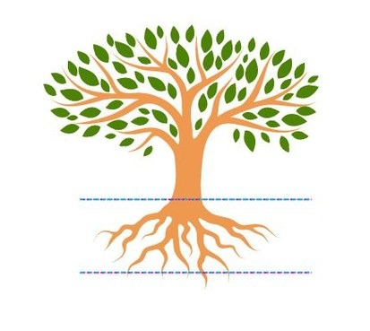
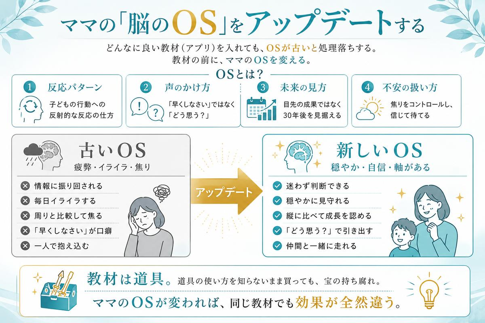
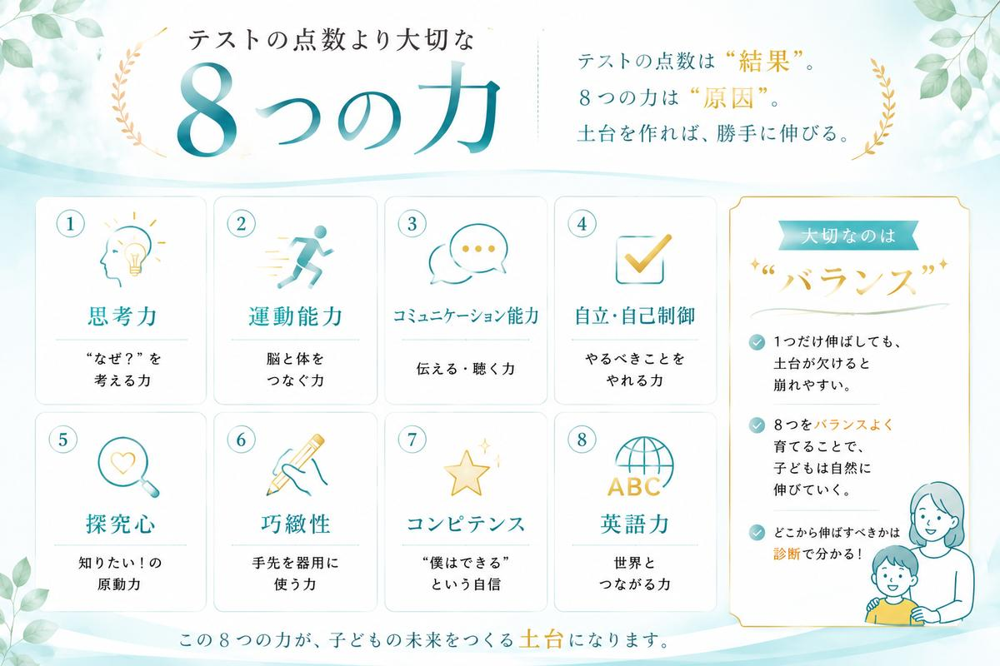
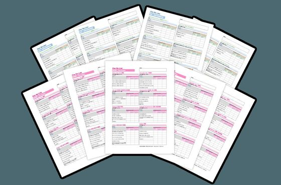
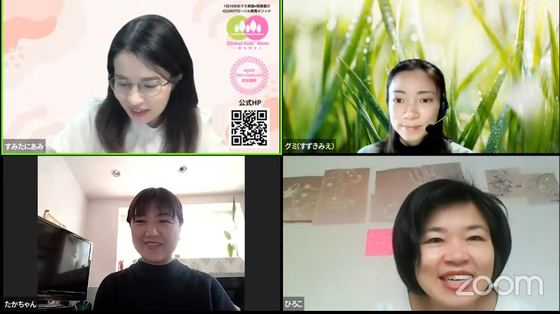
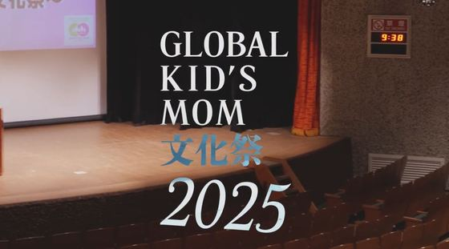
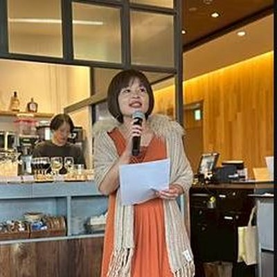

講座の中身も、費用も、この説明会で全部お伝えします。
インター以下の費用で、インター以上の教育を、家庭で。
0〜8歳のお子さまを育てるママ向け／参加無料・オンライン（Zoom）
説明会のご案内はこちら「ホームインターメソッド講座」の内容・費用・進め方を、この説明会で詳しくお伝えします。まずは公式LINEからお申し込みください。
LINE説明会に申し込む（無料） ＼ 友だち追加で日程をご案内します ＼※お申し込み後、公式LINEで開催日程をご案内します。日程変更も可能です。
これまで3日間のチャレンジを実施してきましたが、数日にわたり時間を取り、課題を続けるのは大変——というお声を多くいただきました。
講座の費用や詳しい内容が、参加しないと分からないのはハードルが高い——というお声もいただいていました。
はじめに
AIが進化し、単純な暗記や計算は機械がやってくれる時代。学力だけでは、もう通用しません。日本人のパスポート保有率はわずか17%。意識しているだけで、上位に入れる時代です。
そして、子どもの脳の80%は8歳までに完成します。この「ゴールデンエイジ」に何をするかで、その後が大きく変わる。だからこそ、今このタイミングなんです。

何十万円もする教材を買っても、子どもが飽きて使わなくなる。高ければいい、ではありません。
週に5日も6日も習い事。でも、インターでさえ環境を与えるだけでは本当の力は育ちません。結局、自宅での関わり方の方がはるかに重要です。
「うちの子に何をやらせれば？」——この質問をしている時点で、実は方向がずれています。理由は、説明会でお話しします。
子どもを育てる「環境」を作っているのは、ママです。だから答えはシンプル。ママ自身が変わることが、一番大事。子どもを変えようとしなくていい。ママが変われば、子どもは勝手に伸びていきます。
必要なのは、子どもの「脳のOS」を作ること。パソコンと同じで、どんなに良いアプリを入れても、OSが古いと動かない。OSさえ作れば、あとは自分で伸びる「自走する脳」になります。

インター以下の費用で、インター以上の教育を家庭で実現する設計です。
話し方・考え方・関わり方をアップデート。「誰とも比べない／楽しいから繰り返す／30年後を考える／ママは太陽／家族は最小のチーム」など、子育ての軸を確立します。
探究心・思考力・運動・巧緻性・コミュニケーション・自立／自己制御・コンピテンス・英語力の8つの力を見える化。どこを伸ばすかが明確になります。
何をすればいいか迷わない明確なリスト。特別な時間は不要。1日10分、日常の中で実践できます。
「英語が苦手」でも大丈夫。仕組み化されているので、日常の遊びを英語で。気づけば英検3級レベルの英語力が、いつの間にか身についていきます。

説明会では、この中身をすべてご覧いただけます。

8つの魔法の言葉ワーク 全8回
声かけを根本から変える

母親実技講座 全5回
英語絵本・手遊び・折り紙ほか

動画教材200本以上
＋英語2000センテンス（音声付）

Can Do List 12ヶ月分
毎月の成長が見える

グローバルキッズ診断 計3回
8つの力を可視化

フォローアップ1年＋担任制
一人で悩まない

コミュニティ（月1回リアル交流会）＋会員サイト見放題
やることは、1日10分の遊びだけ。リビング・お風呂・お散歩で、子どもと一緒にやるだけです。
受講生のインタビュー動画も、あわせてご覧ください。
引っ込み思案だった娘が、自発的に発言できるように
のりこさん｜小1の娘・フルタイムワーママ
幼児教室迷子から、「これでいい」が確信に変わった
よしこさん｜一人っ子のママ → 認定講師
受講生のパパが語る、家族に起きた変化
受講生パパ・ご家族の声

「私が変わったら、主人も変わりました」
ちよさん｜2児のママ
完璧主義で毎日ガミガミ。子どもが描いたママの絵は「鬼」だった。自分を大事にできるようになったら、夫まで変わった。

グレー色だった子育てが、バラ色に。今では認定講師に。
ひろこさん｜3兄弟のママ・看護師
夫は単身赴任でワンオペ、激務。「時間がない」から「ある」に目を向けられるように。夫も自分から子育てに関わるように。
「私が変わったら、子供が変わった」
武田高代さん｜9歳・7歳のママ
プリント学習で親子関係が悪化していたが、ママ自身の関わりが変わったら子どもが変わった。「母親という職業を卒業できた」。
塾なし・教材だけで、小3で英検3級。
藤井さん｜8歳・3歳のママ
「この講座がなかったら、いくらかかっていたか…」。教材を買い足すより、ママの関わりを変える方がコスパが高い。
228
IQ 228
統計的な「天才」領域。詰め込み教育なし
算オリ
ファイナリスト
自ら目標を立てて到達
TEDx
→ ハーバード進学
メソッドで育った子の到達点

著書『IQ200グローバルキッズが育つ魔法』（三笠書房）
のべ1万人以上の親子を指導／三笠書房より書籍化／TEDx登壇実績。
ただし、ハーバードが全員のゴールではありません。それぞれの家庭のゴールを目指すための「土台」を作るメソッドです。
1日2日で劇的に変わるものではなく、継続が必要です。ただ一度土台ができれば、その後は勝手に伸びるので、最初の投資は確実にペイします。
子どもだけを変えようとしてもうまくいきません。「子どもだけ変えてほしい、私は何もしたくない」という方には向いていません。
脳のゴールデンエイジは0〜8歳。この時期を過ぎると難易度が上がります。だからこそ、今このタイミングで取り組んでほしいんです。
1つでも当てはまる方は、この説明会がきっとお役に立ちます。
※「面談＆相談会」は、ご希望の方のみの後工程です。無理な勧誘はありません。
脳のゴールデンエイジは、待ってくれません。
まずは説明会で、お子さまの「今」と「これから」を知ることから始めませんか。

IQ・EQ200式 ホームインターメソッド主宰
一般社団法人 Global Kids' Mom 代表理事
ピグマリオン恵美子
東京・吉祥寺にて16年間英語スクールを経営。「入会待ち」が続く教室運営の傍ら、のべ1万人以上の親子を指導してきた「現場の教育家」です。
自身も3児の母。試行錯誤の末にたどり着いた「頑張りすぎずに、子どもの才能を最大化する」メソッドは、大手出版社・三笠書房より書籍化されました。TEDx登壇実績あり。


| 運営会社 | 一般社団法人 Global Kids' Mom |
|---|---|
| 代表理事 | ピグマリオン恵美子 |
| 主な事業内容 | オンラインスクール事業 リアルスクール事業（東京・吉祥寺） 福祉事業（児童発達支援施設） イベント・講演事業（TEDx主催等） |
| 企業理念 | その子らしく個性や才能を伸ばして、これからの時代に一人一人が輝ける社会を実現する。 |